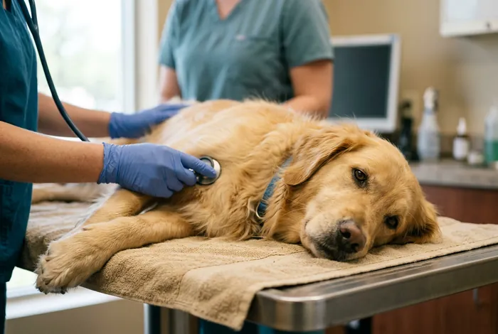

01
Check-up e vacinas
Exame completo do focinho à cauda, carteira de vacinação digital e lembrete no WhatsApp quando chegar o próximo reforço.
- V8, V10, antirrábica e felina
- Exames de sangue no mesmo dia